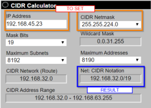

Calculate Subnet
Find network part
:
To do that we have to do a bitwise(meaning operations on bits)
AND operation
between IP and netmask
So the operation is that one
(IP AND
netmask)example: 192.168.45.23/255.255.224.0 → 11000000.10101000.00101101.00010111
AND 11111111.11111111.11100000.00000000 →
⇒ 11000000.10101000.00100000.00000000 →
192.168.32.0 this
192.168.32.0 is the
Network prefix(part) in decimal notation;
to
identify this network we can use the following notation
192.168.32.0/255.255.224.0 or also
192.168.32.0/19 (19 are the number of 1 in
the netmask)
The format
192.168.32.0/19 is also called
CIDR
notation ◇
https://www.subnet-calculator.com/cidr.php  ◇
https://www.ipaddressguide.com/cidr
Find
host part
(number of maximum hosts in the network):
The host part of the IP address is the one
that is not covered by the netmask.
Host part → 32 - (network
part) == Number of bits at the end of the subnet mask set to 0
example:
255.255.224.0 → 11111111.11111111.11100000.00000000
◇ how we can see there are 13 zeros, so 2
13 →
2
13=8192 hosts
◇ 32 - 19 = 13 → 2
13=8192 hosts
Network
and
Broadcast
Addresses
The possible hosts in a given network are always reduced by 2 because there are always 2 special
address:
•
network address(network id): Address used to
identify the entire network. It is the first address in the network and its host portion is set to all zeros.
◇ (
network part) AND (
host part with all 0)
•
broadcast address(broadcast ip): It is the last address in the network.
it is used for addressing all the nodes in the network at the same time
◇ (
network part) AND (
host part with all 1)
This technical limitation
should be extinct (
RFC1878) but is still used to keep compatibility
with old equipment.
example: 192.168.32.0/19 → 192.168.32.0/255.255.224.0
counting the bits in the host
part we have the number of hosts: 13bits so 2
13=8192 host (minus network and broadcast addresses so 8190
hosts)
host part:
00000000.00000000.000
00000.00000000 ◇
network part: 11000000.10101000.00100000.00000000 AND
00000000.00000000.000
00000.00000000 →
11000000.10101000.001
00000.00000000 192.168.32.0 ◇
broadcast address: 11000000.10101000.00100000.00000000
AND 00000000.00000000.000
11111.11111111→11000000.10101000.001
11111.11111111
→
192.168.63.255